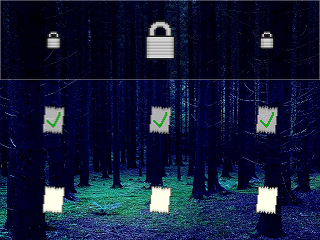

realicraft

Click here to view full image.
Collect all the pages in Slenderman's forest to win, sending checks along the way.
Each page is a location, and can't be reached until it's part of the forest is unlocked.
The center is unlocked by default, and the unlocking the corners requires unlocking their adjacent sides.
Data is accurate for the latest APWorld version (0.2.0).
| Feature | Description |
|---|---|
| Locations | Depending on settings, between 8 and 64 locations. |
| Items | Four unique progression items (Forest Unlocks), one useful item (Free Scouting), and one filler item type. Free Scouting count depends on settings. |
| Goal | Check every location. |
| Traps | Contains no trap items. |
| Protocols | Does not have support for any protocols. Support for Death Link, Trap Link, and Scout Link are planned for future updates. |
| Options | Three options to control location count and Free Scouting count. |
Click here to download the latest client release (0.2.0).
| Version | Patch notes | Download |
|---|---|---|
| 0.2.0 | Initial release. | Download |
Click here to download the latest client release (0.2.0).
| Version | Patch notes | Download |
|---|---|---|
| 0.2.0 | Initial release. | Download |
{kind=link}